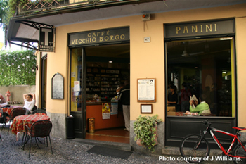
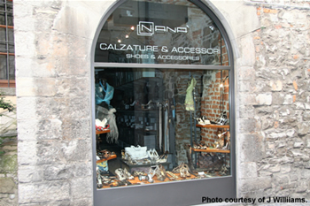

Aspetti di vita italiana
Il bar La gelateria Guardare le vetrine
In Italy il bar and il caffè are synonomous terms. All over Italy you will see these signs as coffee is an Italian passion! I giovani often meet at il bar primarily for un caffè, una pasta or un panino.
The concept of an Italian bar is different from what you find in Australia. Here it is more like a
café. The main difference is that alcohol is available in Italy. Even though alcohol is available,
there is no age restriction for entry to the bar but young people under 18 cannot be served
alcoholic drinks.
I giovani usually go to il pub or la birreria if they want to drink alcohol. These are similar to the
Australian pub. You need to be 18 years old to go to a pub, the same as in Australia.

For a virtual tour of two famous bar and caffè in Italia, explore the following siti web:
Il Calice in Bologna www.turista.it/buongusto/calice
Caffè Florian in Venezia www.caffeflorian.com.
La gelateria ^top
Going to la gelateria is another integral aspect of the Italian way of life, especially during summer.
Having un gelato in Italy means going to la gelateria for a cone and a choice of so many gusti deliziosi. Everyone loves gelato – young and old. There is no age barrier! It is considered to be Italy’s most popular dessert.

For a virtual tour of two famous gelaterie in Italia, explore the following siti web:
Gelataria Gianni in Bologna www.gelateriagianni.com
Giolitti in Roma www.giolitti.it.
Guardare le vetrine ^top
Che passione!

In Italia an important component of shopping is guardare le vetrine! Italians love going for una passeggiata in centro. Part of this ritual involves window shopping. You can’t blame them! Italian shop windows are so attractive and artistic!! Furthermore, when it comes to la moda, Italians are world leaders producing exquisite fashion.
Window shopping serves another purpose! In Italy when you go into a shop, it is customary to ask for what you want rather than browse like in Australia. Having looked at le vetrine, Italian shoppers know exactly what they want.